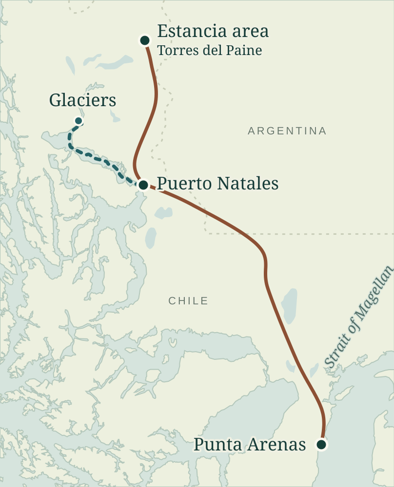
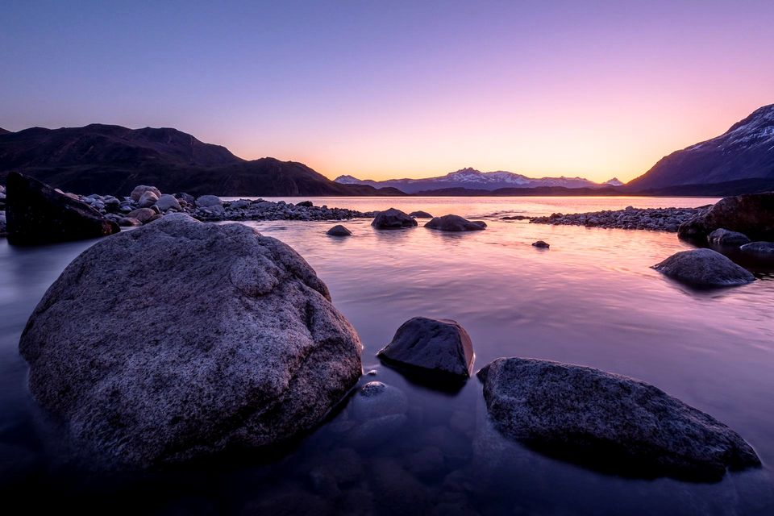

9 days
Torres del Paine, Unhurried
Four nights in the Lake Pehoé area give you several days in the park from the same base.
Explore the nine-day route
Chilean Patagonia · Featured journey
Eight days from the Strait of Magellan to Torres del Paine, with a day on the fjord and three nights at one estancia.
The route
Between the fjord and the mountains, settle into a Patagonian ranch. On this sample route, you can spend a morning at a park viewpoint and return to the same room that evening.

Day 3 · The glacier sailing
You can see Balmaceda Glacier from the boat. At Puerto Toro, the trail to the Serrano Glacier viewpoint is nearly 2 km (1.2 miles) round trip.
If one of you prefers to stay aboard, ask Javier to check whether the operator can accommodate that choice on your sailing.
Explore the walking and terrain
Before you enquire
Javier prepares a written quote for your dates and party size. Ask for a per-person price showing the currency, room arrangement, inclusions and any single-room supplement.
October through April is the planning window. Sailings, excursions and stays depend on the month and local availability. Send your dates to check what fits.
The planned group size is up to 12. Javier confirms the group, properties, room access and guide language for your dates in your written proposal.
Share the distance, steps or uneven ground you each feel comfortable with. Javier can request the walking and vehicle time for your dates and check which alternatives the operators offer.
Two separate trip ideas are an expedition sailing toward Cape Horn or a visit to the king penguins on Tierra del Fuego. Ask Javier about dates and connections for either.
Other sample journeys
9 days
Four nights in the Lake Pehoé area give you several days in the park from the same base.
Explore the nine-day route
6 days
One night in Punta Arenas, then a proposed four-night villa stay near the eastern side of the park.
Explore the private routeYour trip contact
Javier handles trip enquiries and written proposals for Secret of the Andes. Tell him when you hope to travel and what a comfortable day on your feet looks like.
Send Javier a question